2017年5月。
终于！
伊藤诗织鼓起全部勇气在日本媒体上自曝了两年前被强奸的经历。
侵犯她的是山口隆行，一个日本新闻界的大佬。
他曾是东京广播系统（TBS）的前驻华盛顿机构代表、新闻制片人，是日本奇点基金会代表董事。
山口隆行还是日本现任首先安倍晋三的好朋友，曾为安倍写过自传。
所以，这是一个鸡蛋碰石头的故事。
有人支持伊藤诗织，说她是日本最勇敢的女性。
有人则公开质疑她，甚至侮辱她。
认为伊藤就是个妓女，靠上床获得理想的工作，而将这样的事情公开，更是一种不知羞耻的行为。
而对于伊藤诗织来说，“开诚布公”地揭开自己的伤口是她唯一的选择！
究竟是怎样的无奈和勇气，让伊藤“厚着脸”走到聚光灯下曝光这一切。
BBC今年拍摄的纪录片《日本之耻》给了我们答案。
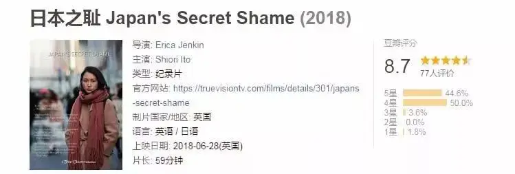
2013年。
山口45岁，是TBS驻华盛顿机构代表。
伊藤25岁，在华盛顿读新闻学，并在华盛顿一个钢琴酒吧做兼职。
在酒吧里，伊藤遇见了山口。
能遇到行业中这么厉害的前辈，伊藤非常开心并要了山口的联系方式。
2015年，伊藤面临毕业，她联系山口，看有没有合适的工作机会。
山口告诉她，他们需要实习生。
4月3日，山口有事回到东京，他将伊藤约了出来，说是和她讨论一下工作签证的事情。
当晚，他们在一家寿司店喝了清酒。
后来伊藤一阵眩晕。
恢复意识的时候，她发现自己已经躺在山口身下。
伊藤本能的进行了反抗，但是哪能抵得住发了狂的禽兽。
她用日语求他不要这样。
但却让山口更加兴奋。
因为在日本含蓄内敛的传统文化中。
不要就是要，拒绝就是同意。
乞求反而取悦了对方，没有办法，伊藤后来用英语骂他：fuck off。
听懂“意思”的山口却告诉她：你通过了。
不管认不认、主动还是被动，伊藤已经被潜规则了。
这样的傲慢让伊藤觉得备受侮辱。
身体和心灵都受到巨大伤害，伊藤不知所措，只能回到家中。
她不知道在第一时间如何处理这件事。
伊藤联系了东京郊区的强奸危机处理中心，想要寻求帮助和指导。
可是对方却拒绝给她提供在线咨询，除非她亲自赶到现场进行咨询。
而伊藤连床都下不了，更不用说乘车两小时赶往现场。
对于一个刚刚被强暴的女孩，伊藤更不敢报警。
就这样，无助的伊藤错失了取证的最佳时机。
原来，这个强奸危机处理中心人手短缺，所以只提供现场咨询。
按照国际标准，每20万人就应该有一个强奸危机处理中心，日本按照人口计算，应该要有635个。
而日本实际上只有四十多个。
数量少，而且服务不到位。
因此，危机处理中心每年大概能收到6000个咨询电话。
最后却只有100个人过来咨询。
这就意味着5900个被强暴的女孩在第一时间得不到专业指导和帮助。
△ 东京强奸危机处理中心负责人对现状也很无奈
当伊藤后面缓过神来，她发邮件质问山口：
我想要平静地谈这件事，所以我给你发了这封邮件，你在我意识不清时与我发生了性关系。
而山口却回复：
我认为我们都需要反思，我当时也喝醉了......当美丽如你的女子半裸着走到我的床前.....事情自然而然地发生了......
面对如此狡猾的回答，伊藤继续问他：你说“强奸”是什么意思？对此我不能接受。
山口则告诉她：如果你想诉诸法律，去吧，你不可能赢的。
五天后，伊藤来到警察局报案。
极度脆弱的伊藤找了一名女警来诉说自己被侵害的经过。
伊藤痛哭流泪说了两小时！
女警最后却告诉伊藤，她是交通管理部门的，这个案子没有办法立案。
女警将伊藤推给了另一位男警官。
就这样，一个被强暴的女孩要在一位男警官面前再次重述自己被侵犯的过程。
而且要在三个陌生的男人面前进行模拟再现！
男警官和另外两名男调查人员让伊藤躺在海绵垫上，然后用和人体积大小一样的人偶在伊藤身上摆弄。
一边拍照，一边询问。
炫目的闪光灯、令人尴尬的提问让伊藤受到二次伤害。
这样的调查方式让很多被强暴的女孩望而却步。
而要在警局找到受理案件的女警也非常难，因为女警在警察中只占8%。
伊藤没有放弃，2015年她公开指控山口的暴行。
这在日本引起极大的轰动。
因为在日本很少有人提出侵犯指控。
英国每百万人就有510起强奸指控案，但在日本，这一数字下降到10起。
这不是因为日本女性比较安全，而是她们不敢说出真相！
在日本，色情杂志、色情服务以及影音作品随处可见，女性常常被男性物化，在两性关系上处于弱势、被动地位。
人们觉得针对妇女的犯罪不是严重的社会问题。
如果你被强暴，亲朋好友会劝你忘掉他，或者说是你自己的错。
而如果你将这样的事情说出来更是一种不知廉耻的行为。
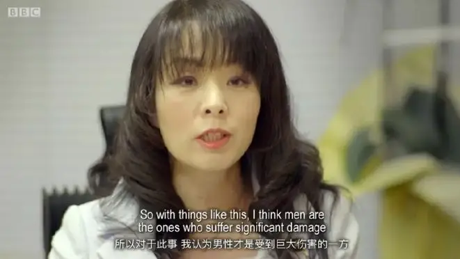
因此，日本虽然很发达，在各个领域都走在世界的前列。
但是在对女性权利的保护，尤其是在强奸、猥亵的法律保护上和我们基本上在一个水平线上。
日本的强奸法可以追溯到1907年，而在以后的一百多年里几乎没有变化。
对于强奸的法定最低刑法只有三年甚至不及盗窃罪。
而伊藤要指控山口强奸罪，就要证明当时山口对她实施了暴力性侵。
这几乎很难证明。
所以很多时候，调查人员会询问当事人，为什么没有拼命反抗。
而事实上，当女性遇到这样的情形，很多时候整个人吓呆了，头脑一片空白。
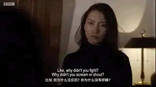
因此，警方会有一些不算科学但是经常会用的标准：
如果事情发生在两个认识的人之间，那强奸几乎是不可能的。
如果再涉及到醉酒那就更不用谈了（根据问卷调查，很多日本人把喝酒当做一种性暗示和性许可）
而伊藤的案件以上两项都符合。
幸好伊藤有人证、物证，当时拉他们去酒店的司机表示听到过伊藤要求山口将自己送到车站。
而酒店的监控视频中，山口是将伊藤拖入酒店中的。
这都能证明山口对伊藤的行为有强制性。
有了这些初步的证据，警方完全有理由逮捕山口做进一步的审问。
但是正当警察要去机场抓捕山口的时候，却收到上级指示，不允许逮捕山口。
因此，在被强奸后近三年的时间里，都只是被动受害的维权者一次又一次的揭开自己的伤口。
而强势一方山口就是在有证据的情况下仍然没有被审问过。
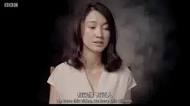
从危机处理中心到警察局，从文化到法律，都不可避免的偏向了施害者，作为一个受害者要从这些夹缝中获胜几乎不可能。
因此，伊藤对山口的两次指控都无果而终。
不得已，伊藤只能孤注一掷，将自己被侵害的经过告诉了全世界。
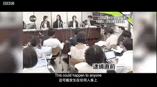
在媒体面前公开自己的经历后。
她被人辱骂，伊藤的家庭也被人肉，整个家庭不得不面对巨大的压力。
伊藤说：
我发现很难建立关系，这让我很孤立，我为我的家人感到非常抱歉，我的妹妹非常伤心，害怕我公开发言的决定会影响她找工作。
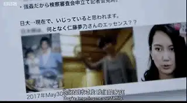
但是伊藤的勇敢感动激励了很多人。
越来越多的人站出来支持她。
一位老奶奶写信鼓励她：我是八十岁的老奶奶，我要把最积极的正能量传给你。
一位遭到强奸但从未说过话的女士，因为看到伊藤的勇敢而非常感动，她告诉伊藤：
一滴水本身没什么，但是当它聚集起来时，就会形成海啸。
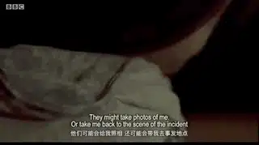
的确，伊藤的指控虽然没有成功，但是她撼动了日本关于强奸的立法。
时隔110年后，日本议会首次对强奸法案进行了修改，法定最低刑法从三年增加到五年，男性也可以作为强奸罪的控告方。
虽然只是一小步，却已是非常不容易。
而随着me too运动席卷全世界，伊藤的案件越来越受到全世界的瞩目。
伊藤通过镜头哭着向大家袒露：
我怀念无所顾虑地和朋友们去酒吧、咖啡厅闲聊，人们不会用那种眼神看着我，对！我怀念那种生活......
但是从我向公众公开我就是那个被强奸的女孩开始，我都没有后悔！
山口依旧逍遥法外，而伊藤仍然走在维权的路上！
me too的浪潮最近也来到了中国。
△ 美国金牌制片人哈维·韦恩斯坦：曾参与制作《低俗小说》、《英国病人》《莎翁情史》《芝加哥》《国王的演讲》《艺术家》等经典作品，2017年10月被爆性丑闻，女星艾丽莎·米兰诺后来在推特上发文：“如果你曾受到性侵犯或性骚扰，请用‘我也是’（MeToo）来回复这条推文”，截至到目前，已有72位女性承认受到过哈维·韦恩斯坦的强暴和性骚扰。
很多人实名举报了一些人的禽兽行为。
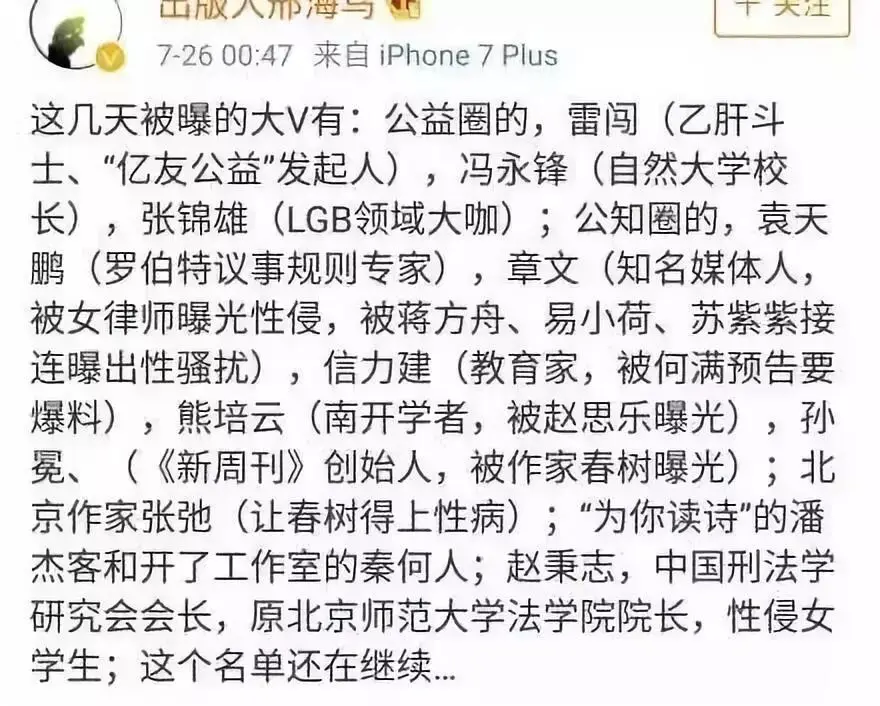
被曝光的人也几乎是各个领域的大佬。
他们中有人热心做着公益事业，有的人挥洒着充满激情的笔墨，有的人为了国家荣誉奋斗在球场上，有的人站在讲台上教书育人。
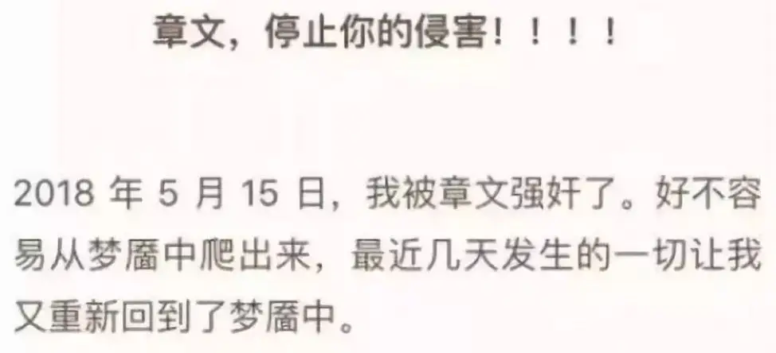
更夸张的是，其中刑法界的大佬赵秉志的学术成果有：强奸罪的正当防卫及特殊防卫权、奸淫幼女罪、强奸幼童的量刑、婚内强奸、强奸罪的理论认定.....
看来这位专业人士是要以身试法，用心良苦啊。
如果你要问我为什么这些如此厉害、如此有学问的人会去强奸、猥亵别人呢？
我的答案是因为他们有机会！
今天会有这么多性侵的悲剧，是因为整个社会缺乏一个常识：那就是人具有罪性，男人在眼目上的情欲要比女人大很多。
我这里所说的罪性不是法律上的意义，而是人类堕落的理性、情感和意志。
保罗的论述非常经典：
因为我所作的，我自己不明白；我所愿意的，我并不作；我所恨恶的，我倒去作。
我也知道在我里头，就是我肉体之中，没有良善；因为立志为善由得我，只是行出来由不得我。
故此，我所愿意的善，我反不作；我所不愿意的恶，我倒去作。
若我去作所不愿意作的，就不是我作的，乃是住在我里头的罪作的。
我觉得有个律，就是我愿意为善的时候，便有恶与我同在。
通俗的讲，就是对人性不要自信、甚至悲观是每个人应该具有的常识，尤其是在男女相处中。
这个常识与知识无关、与种族无关、与贫富也无关。
走在大街上，男人一定会被穿着性感、暴露的漂亮女孩吸引。
而如果有权有钱可以有更多机会和女孩独处，那么有非分之想更是男人的正常反应。
之所以在性上的犯罪在权贵、演艺圈、老师身上更容易发生，是因为他们有更大的机会，也有更多的手段可以去掩饰罪恶。
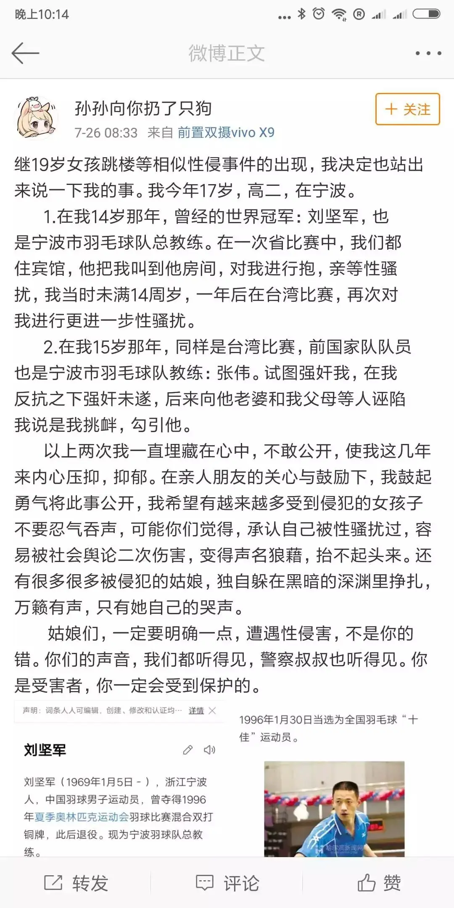
而我们普罗大众没有去做，更多是因为我们没有机会和条件。
就我个人而言，如果哪个女粉丝因为觉得我写的很好约我单独见面，如果恰巧她很漂亮，我一定会有非分之想。
这不是谦虚，而是事实。
这个常识在东方文化中是不具备的，我们要么认为人性本善，常常在含混和没有界限中给了别人机会，要么认为人性本恶，选择封闭而拒绝公共交流。
这个常识不仅仅会影响到男女相处上，也直接导致了我们民主、法治意识的淡薄。
在西方，他们基于这个常识，他们知道绝对的权力就是绝对的腐败，所以他们坚持“我爱我的国家，但我警惕我的政府”。
因此，他们会用三权分立、新闻独立、舆论自由来将权力提早关在牢笼中。
而我们因为没有对人性正确的认识，却始终在期盼一个明君，而不是规避人性之恶的治理体系。
这样的生态中，就是华盛顿来到中国，也一定会被我们惯成一个贪官、暴君。
今天这个世代，要真正建立这个常识很难，我们首先要破除两种骄傲。
第一个是进步主义。
受到历史唯物主义影响，很多人觉得我们的时代在不断进步，因此会对很多新事物欣然接受，甚至跑着去品尝。
所以，性解放在中国的速度是相当快的，我们对老一辈的保守不屑一顾。
未婚同居、婚内出轨、乱伦、娈童在今天甚至成为了时髦，抛开法律不谈，这些行为所受到的道德谴责和良心拷问在逐渐变小。
很多场合下，中国人的聊天离不开荤段子和性元素，包二奶、找小三、一夜情在聊天中似乎成为了成功人士的标配而大谈特谈.....
这些也都在消解着我们对于这些行为的道德敏感，甚至不断暗示我们也这样做，当你有了这个条件和机会，包小三的可能性就会很大。
岂不知道，今天所谓的性解放并不是什么进步，只是不同思想观念的更迭。
在古希腊、古罗马，嫖娼、乱交、娈童甚至和动物的性行为都非常普遍。
△ 潘神与山羊交媾的大理石雕像，出土于赫库兰尼姆古城的帕比里庄园。年代：公元1世纪。
性甚至狂热到一定程度，成为了他们的神。
在考古出土的很多文物中，男性生殖器官成为重要崇拜物而存在。
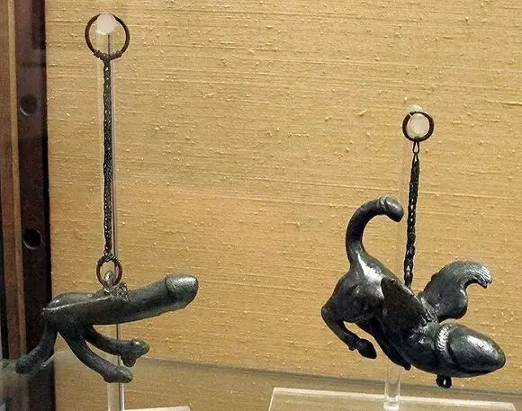
△ 阴茎形状的铜质风铃，庞贝出土，年代：公元1世纪。藏于那不勒斯国家考古博物馆密室馆。
在古希腊的神话中，众神更是有着令人震惊的乱伦和多重性关系。
这种放纵和性狂欢也是罗马帝国消亡的重要原因。
成长在罗马时期的基督教信仰则坚持一夫一妻、婚内忠诚、反对婚前性行为。
这种在性上充满契约意识的忠诚和节制在当时的罗马很异类，但却最终战胜了罗马的异教狂欢。
从此欧洲进入漫长的中世纪。
性忠诚与节制成为主流，甚至有些矫枉过正，禁欲主义随处可见。
从文艺复兴到启蒙运动，欧洲一些人又开始重新挖掘古希腊、古罗马的人文艺术，性解放也开始慢慢抬头。
我们受启蒙运动影响，自然也把性观念保守、节制的基督教时期称为黑暗的中世纪。
可是如果你去了解中世纪人们的道德，其道德标准恐怕会令我们肃然起敬。
直到今天，世界范围内的性狂欢、感官盛宴也不过只是回到了古希腊、古罗马的酒神文化。
这并不是一种进步，只是一种观念的变革，甚至是一种堕落。
我们进步的只是工具和技术，过去骑着马去嫖娼，现在坐着火箭去嫖娼，进步的不是人，是工具。
第二，我们需要破除的弗洛伊德的谎言。
弗洛伊德认为人的本质就是性，所有行为原动力的背后都是性冲动。
他的理论在后来受到很多人的批评和质疑，但是他的理论影响很深。
他给性放纵找了理论基础。
既然不能压抑性欲，那就大胆的释放吧，就像饿了就要吃饭，性欲来了也尽管去找别的女孩。
今天媒体杂志、电影、人们的穿着打扮都充满了性暗示。
性感成为很多人审美的最高标准。
在这些观念、环境的冲击之下，现代人都不可避免地置身于充满试探和挑战的环境中。
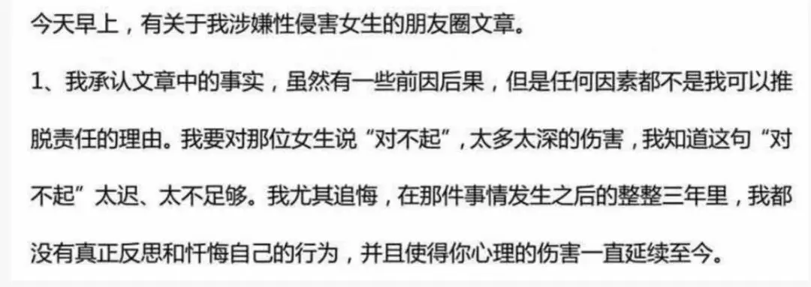
△ 雷闯的道歉
而弗洛伊德给出理论更会让我们心安理得，这可是有科学基础的！
岂不知，弗洛伊德只是把人的罪性用理论包装了一下。
有了外面这层美丽的包装纸，我们会自欺欺人、缴械投降，不再提防那头随时可能出来伤害别人的狮子。
所以性侵、猥亵、娈童在如今会更多。
我们需要破除进步主义的偶像，不需要把性解放看作理所当然。
我们也需要脱掉各种粉饰谎言的外套，承认我们的这种罪性。
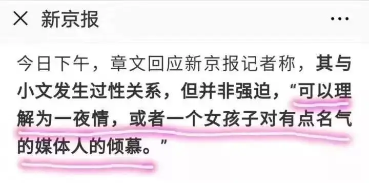
△ 章文中毒不轻
这样，女性见男性时就知道穿着尽量端庄素雅，因为你明白如果你穿的性感、暴露，对男性而言是一项诱惑和挑战。
女性也就明白独处的浪漫是一种危险，因为你的这种小浪漫会让男性有非分之想，甚至给了男性野兽出笼的机会。
女性也可以大大方方地拒绝男性提出要共处一室的要求，因为拒绝不是出于不尊重，而是出于保护和共识：避免男性出轨和自己受害。
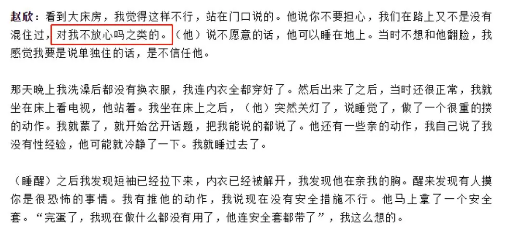
△ 赵欣（化名）曝光自己被“亿友公益”创始人雷闯性侵经过
男性也不会因为女性拒绝和自己独处而觉得对方不尊重你，也不必再和别人玩暧昧还装无辜。
出差的时候也应该自觉和妻子通话，甚至可以请同性朋友和自己住一起，这样可以避免试探。
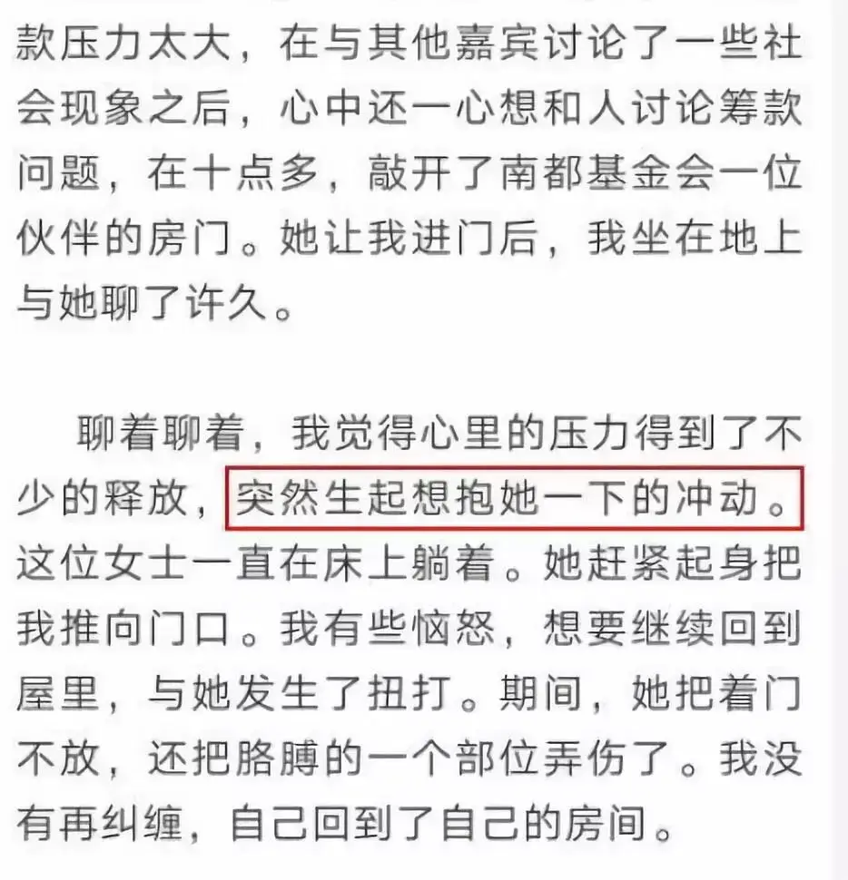
△ 环保公益人冯永锋回应女员工对自己的控诉
这样，我们也不必因为那些教授、学者、律师、官员的兽行而绝望，因为这很正常，罪性与知识无关，只不过是你过去高估了人性。
作为弱势群体的女孩要尽量避免和他们独处，他们侵犯你的可能性更高。
我们普通人也不必觉得自己很好，你明白你这样做只是因为你没有在那个位置上，如果是你，你不一定比别人做的好。
当有一天，每个人都承认“me too ，我也是罪人，我嫉妒别人，我看到漂亮女孩就动邪心的时候”。
我们才能走向真实和信仰！才可能去仰望那为我们钉死在十字架上的耶稣。
我们的社会也才会更有理性和原则，也更懂得互相尊重和保护，也就更深的明白"男女之间有界限的交往才是真正的尊重"。
关注并回复：日本之耻
获取纪录片资源
相关推荐：
疯子带着瞎子走路，这正是我们时代的病态！
像猪一样活着，像猪一样死去 !
73年过去了，纳粹离我们有多远？
你们一直在抱怨这个地方，但是你们却没有勇气走出这里
击垮纳粹独裁的六份传单
这里没有挑逗你眼目情欲的小鲜肉
也没有挑动你肉体情欲的段子
更没有膨胀你今生骄傲的鸡血
我们只在乎那些最质朴真诚的作品
在那里我们才能恢复真正的想象力
我们也坚信这才是我们真正需要的

ID:Six_hundred_hits
长按二维码，一键关注
【六百击】
-END-
电影评论
尽情分享朋友圈

苹果打赏通道
小提示：文末广告是腾讯配送广告，内容与本号无关，但您的每次点击（无需反复点）都会给平台带来几毛收益，欢迎您点击支持六百击。